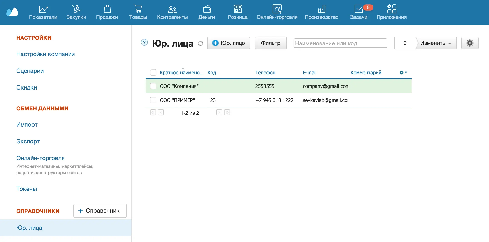
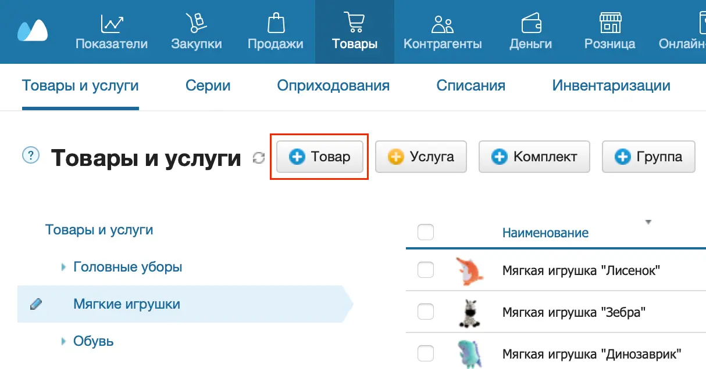
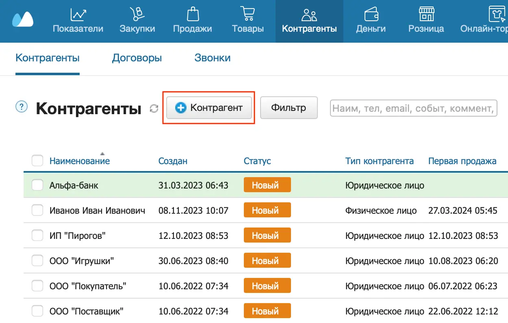
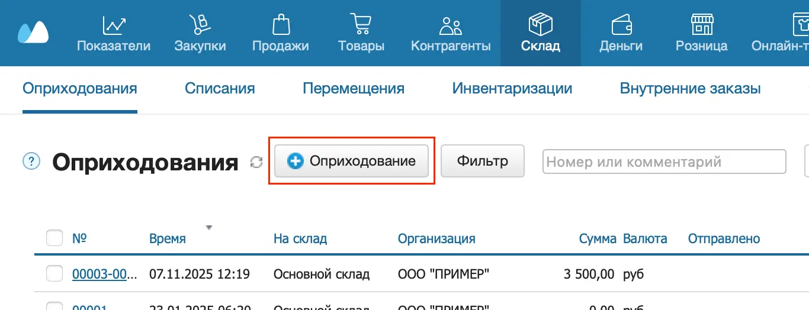
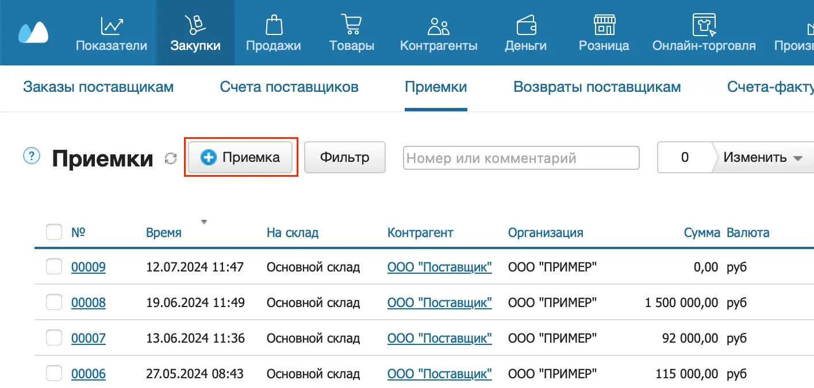
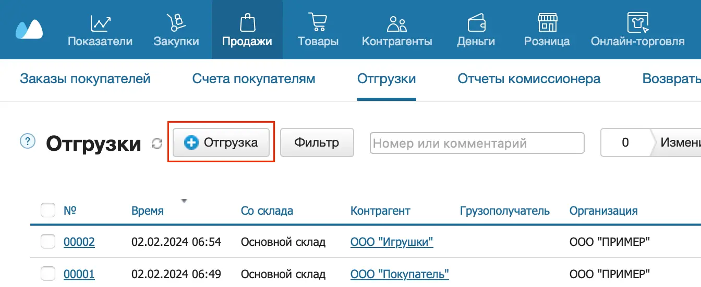

Чтобы начать работу в МоемСкладе, необходимо внести данные о компании, товарах, контрагентах, остатках, закупках и продажах. Рассмотрим каждый шаг подробнее.
Внесение данных о компании
Перейдите на страницу настроек юр. лиц: Аккаунт → Настройки → Справочники → Юр. лица.

Внесите данные о своей компании:
- название;
- контактные данные;
- банковские и юридические реквизиты (при печати документов указываются как данные продавца или грузоотправителя);
- фактический адрес;
- данные руководителя и главного бухгалтера (используются при печати документов);
- НДС (отметьте, если компания — плательщик НДС);
- печать и подпись.
Подробнее см. Юрлица.
Задайте также общие настройки сервиса.
Наполнение справочника товаров
Прежде чем создавать документы, внесите свои товары и услуги в справочник на странице Товары → Товары и услуги.

Если товаров или услуг немного, можно наполнить справочник вручную. Если список товаров большой, импортируйте данные в МойСклад.
Наполнение справочника контрагентов
Чтобы вести документооборот и взаиморасчеты с поставщиками и покупателями, внесите информацию о них в раздел CRM → Контрагенты.

Справочник контрагентов можно заполнить вручную или импортировать данные из файлов форматов Excel или CSV. Не обязательно наполнять справочник контрагентов сразу. Это можно делать по ходу работы, добавляя в справочник новых поставщиков и покупателей при создании документов.
Если вы не ведете базу контрагентов (например, в случае розничных продаж), пропустите этот этап — система автоматически создаст контрагента Розничный покупатель. На него оформляется розничная продажа, если покупатель не указан.
Подробнее см. Контрагенты: Покупатели и Поставщики.
Внесение начальных остатков по складу
Если ваша компания только начинает работу и на складе нет товаров, пропустите этот этап. Если товар на складе есть, перейдите в раздел Склад → Оприходования и внесите его в систему через оприходование. Подробнее см. Оприходование товаров.

Внести начальные остатки товаров по складу можно также импортом.
Чтобы проверить данные по начальным остаткам, используйте отчет Остатки.
Закупка товара у поставщика
Прежде чем продать товар покупателю, его нужно приобрести у поставщика. Закупка товара у поставщика оформляется в разделе Закупки → Приемки. Подробнее см. Приемки.

Чтобы проверить поступление товара на склад, используйте отчет Остатки.
Продажа товара покупателю
Продажа товаров покупателю оформляется в разделе Продажи → Отгрузки. Подробнее см. Отгрузки.

Чтобы оценить прибыль от реализации товаров, используйте отчет Прибыльность.